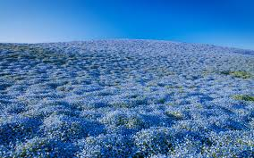

Flowers, whether in a bouquet or growing in a pot or flower bed, always have a special way of lifting our spirits. This is due in part to the principles of color therapy, an alternative therapy grounded in the idea that colors have powerful effects on our moods. You can combine the wellness benefits of gardening, with some color therapy, to get the best of both worlds! Add a few of these colorful flowers to your Des Moines garden to make you, and your neighbors, smile.
According to the principles of color therapy, certain colors tend to specific emotional responses in people. Blues are calming, greens are tranquil and grounding, yellows are cheerful, red is passionate and romantic, pink promotes kindness and gentleness, and purple inspires creativity and mystery.

Purple
Click the purple flowers image to read more...


Yellow
Click the yellow flowers image to read more...
Blue
Click the blue flowers image to read more...

Purple flowers come in every shape and size, from tiny grape hyacinths to towering alliums and climbing clematis. But you just can’t beat purple pansies for their mood-boosting pop of purple, often with an eye-catching yellow center. Fill a pot with these striking purple beauties, the perfect spring plants, and they’ll bring a smile to any face that passes them by.Back to Home Page...


Coreopsis is a cheerful yellow flower that happens to be native to Iowa. It keeps pollinators happy and brings plenty of sunny cheer from early summer through fall. There are over 100 varieties of coreopsis, including both perennial and annual types. They are also available in a wide range of colors, from vibrant bright yellow to rich orange and deep red, if you’d like to experiment with an even broader spectrum!Back to Home Page...


Blues are a color that’s a bit challenging to come by in the gardening world. The two best flowers for featuring true blues are Forget-me-nots and Himalayan Blue Poppy. Unfortunately, Himalayan Blue Poppies are extremely difficult to grow and are pretty hard to come by. Luckily for us, Forget-me-nots are much more forgiving, and they deliver a whole batch of pretty little blue flowers from spring to summer. They’ll do well in full sun or part shade, and should naturalize well in your landscape.Back to Home Page...


